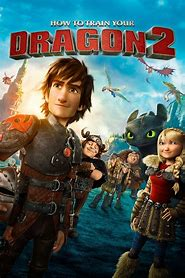

1. How To Train Your Dragon (2010)

In the Viking village of Berk, young Hiccup defies tradition by befriending a feared Night Fury dragon, whom he names Toothless. Their friendship changes the way Vikings see dragons forever.
Themes: Friendship, courage, challenging tradition.
2. How to Train Your Dragon 2 (2014)
Now a young adult, Hiccup discovers a hidden dragon sanctuary and reunites with his long-lost mother. As a new enemy rises, Hiccup must step up to become the leader Berk needs.
Themes: Leadership, family, unity.
3. How to Train Your Dragon: The Hidden World (2019)
With danger closing in on their peaceful home, Hiccup searches for a legendary safe haven for dragons. As Toothless finds love, both he and Hiccup face their most difficult decision—letting go.
Themes: Growing up, love, letting go.